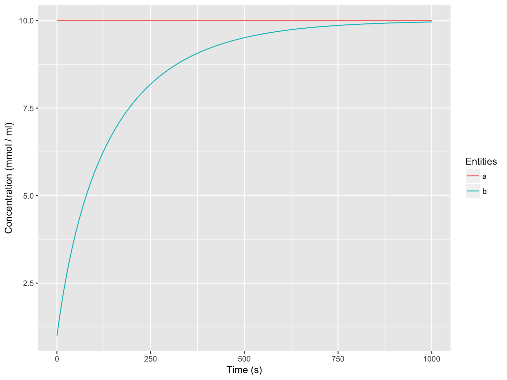
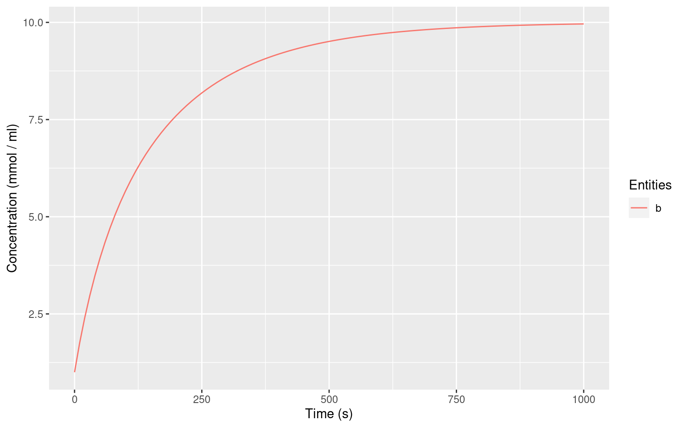

Building a quick Michaelis-Menten reaction using Copasi’s automatisms. Working with reaction schemes automatically creates required entities the same way the Copasi GUI does.
newModel()
#> # A copasi model reference:
#> Model name: "New Model"
#> Number of compartments: 0
#> Number of species: 0
#> Number of reactions: 0
newReaction("a = b", fun = "Reversible Michaelis-Menten")
#> [1] "(a = b)"
getSpecies()
#> # A tibble: 2 x 12
#> key name compartment type initial_concentra… initial_number
#> <chr> <chr> <chr> <chr> <dbl> <dbl>
#> 1 a{compar… a compartment reacti… 1.00 6.02e²⁰
#> 2 b{compar… b compartment reacti… 1.00 6.02e²⁰
#> # ... with 6 more variables: concentration <dbl>, number <dbl>, rate
#> # <dbl>, number_rate <dbl>, initial_expression <chr>, expression <chr>
getReactions()
#> # A tibble: 1 x 6
#> key name reaction rate_law flux number_flux
#> <chr> <chr> <chr> <chr> <dbl> <dbl>
#> 1 (a = b) a = b a = b FunctionDB.Functions[Reversibl… 0 0
getParameters()
#> # A tibble: 4 x 5
#> key name reaction value mapping
#> <chr> <chr> <chr> <dbl> <chr>
#> 1 (a = b).Kms Kms a = b 0.100 <NA>
#> 2 (a = b).Kmp Kmp a = b 0.100 <NA>
#> 3 (a = b).Vf Vf a = b 0.100 <NA>
#> 4 (a = b).Vr Vr a = b 0.100 <NA>
unloadModel()Getting more detail in can be helpful. Here we create a global quantity “substrate concentration” which applies a fixed value to species “a”. This is achieved by assigning the Value reference of the global quantity to species “a”.
newModel()
#> # A copasi model reference:
#> Model name: "New Model"
#> Number of compartments: 0
#> Number of species: 0
#> Number of reactions: 0
subs_quant <- newGlobalQuantity("substrate concentration", initial_value = 10)
subs_value <- quantity(subs_quant, reference = "Value")
subs_value
#> [1] "{Values[substrate concentration]}"
newSpecies("a", type = "assignment", expression = subs_value)
#> Warning: No compartment exists. Created default compartment.
#> [1] "a{compartment}"
newReaction("a = b", fun = "Reversible Michaelis-Menten")
#> [1] "(a = b)"
getGlobalQuantities()
#> # A tibble: 1 x 8
#> key name type initial_value value rate initial_express… expression
#> <chr> <chr> <chr> <dbl> <dbl> <dbl> <chr> <chr>
#> 1 Value… subs… fixed 10.0 NaN 0 "" ""
getSpecies()
#> # A tibble: 2 x 12
#> key name compartment type initial_concentra… initial_number
#> <chr> <chr> <chr> <chr> <dbl> <dbl>
#> 1 a{compar… a compartment assign… 10.0 6.02e²¹
#> 2 b{compar… b compartment reacti… 1.00 6.02e²⁰
#> # ... with 6 more variables: concentration <dbl>, number <dbl>, rate
#> # <dbl>, number_rate <dbl>, initial_expression <chr>, expression <chr>
getReactions()
#> # A tibble: 1 x 6
#> key name reaction rate_law flux number_flux
#> <chr> <chr> <chr> <chr> <dbl> <dbl>
#> 1 (a = b) a = b a = b FunctionDB.Functions[Reversibl… 0 0
getParameters()
#> # A tibble: 4 x 5
#> key name reaction value mapping
#> <chr> <chr> <chr> <dbl> <chr>
#> 1 (a = b).Kms Kms a = b 0.100 <NA>
#> 2 (a = b).Kmp Kmp a = b 0.100 <NA>
#> 3 (a = b).Vf Vf a = b 0.100 <NA>
#> 4 (a = b).Vr Vr a = b 0.100 <NA>
timecourse <- runTC(1000)
autoplot(timecourse)
In previous examples, we used the predefined “Reversible Michaelis-Menten” kinetic functions. In this example we create an equivalent function manually to achieve the same result.
newModel()
#> # A copasi model reference:
#> Model name: "New Model"
#> Number of compartments: 0
#> Number of species: 0
#> Number of reactions: 0
newCompartment("compartment")
#> [1] "Compartments[compartment]"
newSpecies("a", type = "fixed", initial_concentration = 10)
#> [1] "a{compartment}"
newSpecies("b")
#> [1] "b{compartment}"
newKineticFunction(
"manual MM",
"((Vf * substrate) / Kms - Vr * product / Kmp) / (1 + substrate / Kms + product / Kms)",
parameters = list(substrate = "substrate", product = "product")
)
#> [1] "FunctionDB.Functions[manual MM]"
newReaction(
"a = b",
fun = "manual MM",
mapping = list(
substrate = "a",
product = "b",
Vf = 0.1,
Kms = 0.1,
Vr = 0.1,
Kmp = 0.1
)
)
#> [1] "(a = b)"
timecourse <- runTC(1000)
autoplot(timecourse)
The runTC function only returns actual defined entities of the model. Auxiliarry information like reaction rates can be missing and and need to be added via global quantity assignment.
newModel()
#> # A copasi model reference:
#> Model name: "New Model"
#> Number of compartments: 0
#> Number of species: 0
#> Number of reactions: 0
subs_quant <- newGlobalQuantity("substrate concentration", initial_value = 10)
subs_value <- quantity(subs_quant, reference = "Value")
newSpecies("a", type = "assignment", expression = subs_value)
#> Warning: No compartment exists. Created default compartment.
#> [1] "a{compartment}"
newReaction("a = b", fun = "Reversible Michaelis-Menten")
#> [1] "(a = b)"
runTC(1000)$result
#> # A tibble: 101 x 3
#> Time b a
#> <dbl> <dbl> <dbl>
#> 1 0 1.00 10.0
#> 2 10.0 1.75 10.0
#> 3 20.0 2.40 10.0
#> 4 30.0 2.97 10.0
#> 5 40.0 3.48 10.0
#> 6 50.0 3.94 10.0
#> 7 60.0 4.35 10.0
#> 8 70.0 4.72 10.0
#> 9 80.0 5.06 10.0
#> 10 90.0 5.37 10.0
#> # ... with 91 more rows
newGlobalQuantity(
"reaction rate",
type = "assignment",
expression = reaction("a = b", reference = "Flux")
)
#> [1] "Values[reaction rate]"
runTC(1000)$result
#> # A tibble: 101 x 4
#> Time b a `Values[reaction rate]`
#> <dbl> <dbl> <dbl> <dbl>
#> 1 0 1.00 10.0 0.0811
#> 2 10.0 1.75 10.0 0.0696
#> 3 20.0 2.40 10.0 0.0608
#> 4 30.0 2.97 10.0 0.0538
#> 5 40.0 3.48 10.0 0.0480
#> 6 50.0 3.94 10.0 0.0432
#> 7 60.0 4.35 10.0 0.0391
#> 8 70.0 4.72 10.0 0.0356
#> 9 80.0 5.06 10.0 0.0326
#> 10 90.0 5.37 10.0 0.0299
#> # ... with 91 more rows
unloadModel()